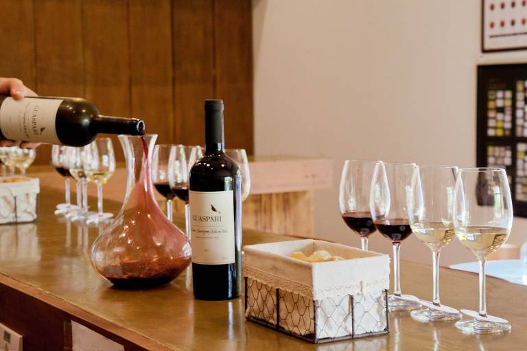

É um restaurante em Bento Gonçalves que oferece uma experiência autêntica da culinária típica da região. O cardápio é composto por pratos tradicionais como polenta, galeto, massa caseira e sobremesas como sagu e cuca de uva, acompanhados por uma excelente seleção de vinhos locais. O ambiente é acolhedor e rústico, com decoração que remete às tradições da Serra Gaúcha. É uma excelente opção para quem quer provar a culinária local em um ambiente familiar e descontraído.

Vinhos
A carta de vinhos é cuidadosamente selecionada e apresenta uma ampla variedade de rótulos, desde os mais tradicionais até os mais modernos. É possível degustar vinhos tintos, brancos e espumantes, além de experimentar vinhos produzidos em pequenas vinícolas familiares, que são verdadeiras joias da região.
Comidas
O cardápio é composto por pratos tradicionais da culinária italiana, alemã e gaúcha, com ingredientes frescos e selecionados, e preparados de maneira artesanal. Entre as especialidades do restaurante estão o famoso galeto al primo canto, o tradicional risoto de funghi e a saborosa polenta frita. Além disso, o restaurante oferece opções vegetarianas.

Queijos
O cardápio oferece uma seleção de queijos de diferentes tipos, texturas e sabores, todos produzidos com leite fresco e sem adição de conservantes ou corantes artificiais. Entre os queijos disponíveis no restaurante, destacam-se o queijo colonial, o queijo serrano e o queijo gorgonzola, que podem ser degustados em tábuas de queijos acompanhadas de pães caseiros.